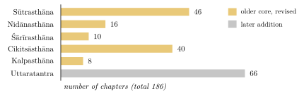
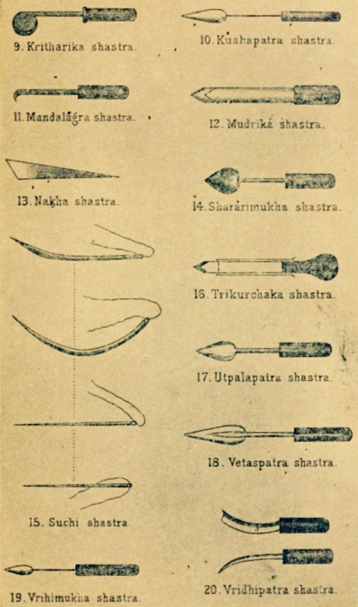
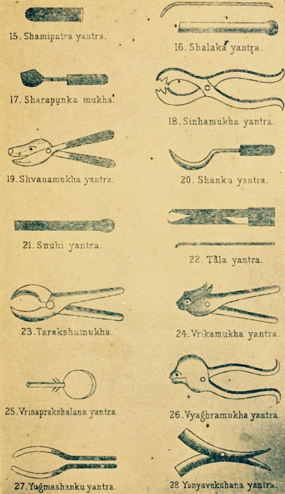
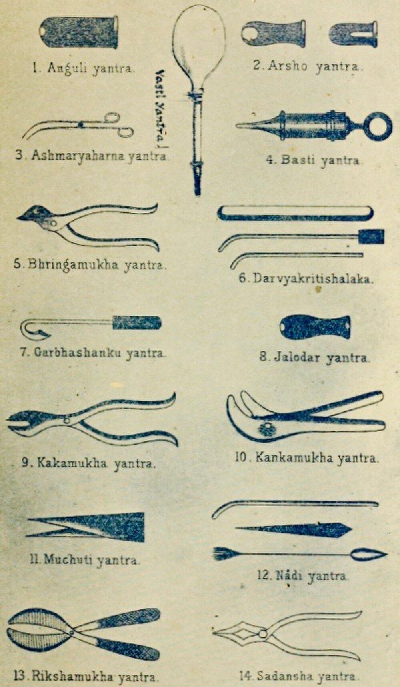

Chapter 4: The Suśruta Saṃhitā and Indian Surgery¶
yathā kharaś candanabhāravāhī bhārasya vettā na tu candanasya
evaṃ hi śāstrāṇi bahūny adhītya cārtheṣu mūḍhāḥ kharavad vahanti
As a donkey carrying a load of sandalwood
knows its weight but not the sandalwood,
so those who have studied many treatises
without grasping their meaning carry them like donkeys.
— Suśruta Saṃhitā, Sūtrasthāna 4.4
4.1 The Work and Its History¶
The Suśruta Saṃhitā is the great classical work of Indian surgery (śalyatantra). Like the Caraka Saṃhitā, it covers the whole of medicine, but its distinctive contribution lies in its account of surgical training, instruments and operations, of wounds and their care, of anatomy learned by dissection, and of the “vital points” of the body. It is among the most detailed surgical texts to survive from the ancient world, and the reconstructive operations it describes for the nose and the ear lobe have made it famous far beyond India.
The work presents itself as the teaching of Divodāsa Dhanvantari, king of Kāśī, to his pupil Suśruta. Like Caraka’s compendium, it is composite. Current scholarship treats it as an older core—perhaps of the last centuries BCE—that was revised and enlarged, above all by the addition of the Uttaratantra (“later book”; Table 4.1 and Figure 4.1), and that had approximately its present form by about 500 CE (Meulenbeld 1999–2002; Wujastyk 2003). The twelfth-century commentator Ḍalhaṇa names a “Nāgārjuna” as its redactor; who this was is unknown, and there is no good reason to identify him with the Buddhist philosopher of the same name. A Nepalese palm-leaf manuscript of 878 CE preserves a version that differs in many places from the one printed in modern editions (Section 5.6.4). The traditional dating of Suśruta to the second millennium BCE has no historical basis.
The standard edition is that of Jādavjī Trikamjī Ācārya and Nārāyaṇ Rām Ācārya, with the commentary of Ḍalhaṇa (Trikamji Acharya and Acharya 1938). The complete English translation of Kunja Lal Bhishagratna is old but still useful (Bhishagratna 1907–1916); Wujastyk translates important chapters (Wujastyk 2003), and Valiathan summarises the whole work for the modern reader (Valiathan 2007). Guido Majno’s history of wound treatment in the ancient world gives a fair assessment of Suśruta’s surgery alongside Egyptian, Greek, Roman and Chinese practice (Majno 1975).
| Section | Chapters | Subject |
|---|---|---|
| Sūtrasthāna | 46 | General principles; training; instruments; alkalis and cautery; leeches; wounds; diet |
| Nidānasthāna | 16 | Causes and signs of diseases, especially those requiring surgery |
| Śārīrasthāna | 10 | Embryology, anatomy (including dissection), vessels, vital points, pregnancy |
| Cikitsāsthāna | 40 | Treatment, including operations, fractures and the purification therapies |
| Kalpasthāna | 8 | Toxicology: poisons, snakes, insects and their treatment |
| Uttaratantra | 66 | Diseases of the eye, ear, nose and head; children’s diseases; general medicine; possession; method |
| Total | 186 |
4.1.1 Beyond Surgery¶
Although surgery is its distinctive subject, the Suśruta Saṃhitā also contains a full system of medicine. Its Sūtrasthāna includes a long chapter on foods and drinks (Su.Sū. 46), the longest in the work, and chapters on the classification of drugs, the qualities of land and water, the seasons and the regimen of health. Suśruta’s account of the doṣas gives blood a special place: in discussing the origin of disease he treats blood almost as a fourth doṣa, alongside wind, bile and phlegm, and he regards the vitiation of blood as the cause of many skin diseases, swellings and abscesses—which is why bloodletting is so important in his school. The Cikitsāsthāna includes the purification therapies, rejuvenation and virility, and a chapter on the prevention of disease (Su.Ci. 24) that describes the daily regimen, exercise and massage.
Suśruta’s chapter on liquids (Su.Sū. 45) contains a notable discussion of drinking water. It describes the properties of rain water, river water, well water and water from tanks and springs, the signs of polluted water—discoloured, foul-smelling, slimy, full of insects or decaying leaves—and the diseases it causes, and methods of purifying it: boiling, heating in the sun, plunging heated iron or stones into it, and clarifying it with the crushed seeds of the kataka tree (Strychnos potatorum), a method still used in parts of rural India to settle muddy water. The water is then to be cooled and kept in clean vessels.

4.1.2 Learning and Teaching¶
The opening chapters of the Sūtrasthāna describe the student’s initiation and study. As in Caraka, the teacher instructs the newly initiated student in the conduct expected of him, and the text describes how a text is to be learned: by reciting it with the teacher, phrase by phrase and verse by verse, until it is memorised, and then by understanding its meaning. Suśruta is scornful of learning without understanding: in the verse quoted at the head of this chapter he compares the student who has memorised a text without grasping its meaning to a donkey carrying sandalwood (Su.Sū. 4.4). The same chapter recommends that the student learn from other sciences as well, since no single science contains everything.
4.2 The Scope of Surgery¶
The word śalya means a dart or thorn, anything lodged in the body that causes pain. Surgery is the art of removing such things: arrows, splinters, stones, dead foetuses, pus and diseased tissue. Suśruta distinguishes foreign bodies that arise within the body (śārīra)—such as stones, hair or pus—from those that enter it from outside (āgantu), and gives detailed instructions for locating and extracting arrows, which reflects the importance of war wounds in early surgery.
He classifies all operations into eight kinds (Su.Sū. 5; Table 4.2).
| Operation | Meaning | Operation | Meaning |
|---|---|---|---|
| chedya | excision | eṣya | probing |
| bhedya | incision | āhārya | extraction |
| lekhya | scraping | visrāvya | drainage |
| vedhya | puncture | sīvya | suturing |
Alongside the knife, Suśruta gives great importance to two other means of treatment: caustic alkali (kṣāra), which he calls superior to cutting instruments because it can be applied where knives cannot, and the actual cautery (agnikarma), which he considers superior still because diseases treated by fire do not recur (Su.Sū. 11–12). He also describes bloodletting by leeches, horn, gourd and venesection (Chapter 7).
4.2.1 Alkali and Cautery¶
Suśruta’s chapters on alkali and cautery (Su.Sū. 11–12) are among the most detailed in the work. Caustic alkali (kṣāra) was prepared from the ashes of particular plants dissolved in water and concentrated. It was graded as mild, medium or strong, and applied externally to growths, haemorrhoids, fistulae and skin diseases, or given internally in diluted form. Suśruta describes the signs of proper and excessive application and its neutralisation with sour liquids. Actual cautery (agnikarma) was performed with heated rods, probes and other instruments of metal, or with heated substances such as honey, oil, wax or treacle, and was used to stop bleeding, to treat pain in the joints and ligaments, warts, sinuses and haemorrhoids, and after excision. The text describes several forms of cauterisation—in rings, dots or lines, or by rubbing—and four degrees of accidental burns, with their treatment.
4.2.2 Leeches¶
Suśruta’s chapter on leeches (Su.Sū. 13) describes where suitable leeches are to be found, how they are to be caught, kept and fed, how they are applied, how they are made to let go, and how they are made to vomit the blood they have taken so that they may be used again. He distinguishes twelve kinds, six venomous and six not, by their colour, shape and habitat. Leeches were preferred for the delicate, the young, the old and the timid, because their use is gentle. Medicinal leeches, whose saliva contains anticoagulant substances, are still used in modern reconstructive surgery to relieve congested tissue.
4.2.3 Arrows and Foreign Bodies¶
War made the extraction of arrows one of the surgeon’s principal tasks. Suśruta describes the kinds of arrowhead, the signs by which the position of a buried arrowhead can be inferred—swelling, pain, bleeding, the patient’s posture—and many methods of extraction: pulling it out the way it entered, pushing it through to the other side, cutting down upon it, or using magnets for iron points. He also describes the removal of foreign bodies from the eye, ear, nose and throat, and of food lodged in the throat by a blow on the shoulders.
4.3 Surgical Training¶
One of the most admired passages of the work is its account of surgical practice on models (yogyā, Su.Sū. 9). A student who has learnt the texts but has not practised, Suśruta says, is unfit to operate. He is to practise each operation on objects that resemble the tissues in question (Table 4.3).
| Operation | Practised on |
|---|---|
| excision | gourds, cucumbers, melons and other fruits and vegetables |
| incision | a leather bag, bladder or pouch filled with water or mud |
| scraping | a stretched hide with the hair still on it |
| puncture | the vessels of dead animals; lotus stalks |
| probing | worm-eaten wood, bamboo, reeds, the mouths of dried gourds |
| extraction | the pulp of jack-fruit and other fruits; the teeth of dead animals |
| drainage | a plank of silk-cotton wood smeared with beeswax |
| suturing | the edges of thick and thin cloth and of soft leather |
| bandaging | model human figures made of cloth or other material |
| ear-lobe repair | soft flesh, or lotus stalks |
| cautery and alkali | pieces of soft flesh |
4.4 Instruments¶
Suśruta describes 101 blunt instruments (yantra) and 20 sharp instruments (śastra); modern reconstructions of both are shown in Figures 4.2–4.4. He adds that the hand is the chief of all instruments, since none can be used without it, and that the physician may devise others as circumstances require.
The blunt instruments fall into six groups (Su.Sū. 7): forceps shaped like the heads of animals and birds (svastika, 24), tongs (saṃdaṃśa, 2), flat instruments (tāla, 2), tubes (nāḍī, 20), rods and probes (śalākā, 28) and accessory instruments (upayantra, 25), among which the text counts such things as cords, bandages, leather, bark, creepers, stones, hammers, magnets, the tongue and the teeth. The tubes include instruments for examining fistulae and haemorrhoids and for administering enemas.
The twenty sharp instruments (Su.Sū. 8) are named mostly after their shapes (Table 4.4). Instruments are to be made of good iron by a skilled smith, kept sharp, clean and in boxes, and the text describes how they should be held, what operations each is used for, and the qualities of a good edge.
| Name | Meaning | Name | Meaning |
|---|---|---|---|
| maṇḍalāgra | round-tipped knife | āṭīmukha | “bird’s-beak” knife |
| karapatra | saw | śarārimukha | scissors |
| vṛddhipatra | razor-shaped knife | antarmukha | knife with inward-curved edge |
| nakhaśastra | nail-shaped knife | trikūrcaka | three-pointed instrument |
| mudrikā | ring-knife, worn on the finger | kuṭhārikā | small axe |
| utpalapatra | lotus-leaf knife | vrīhimukha | “rice-grain” lancet |
| ardhadhāra | single-edged knife | ārā | awl |
| sūcī | needle | vetasapatra | cane-leaf knife |
| kuśapatra | grass-leaf knife | baḍiśa | hook |
| eṣaṇī | probe | dantaśaṅku | dental scraper |




No surgical instrument described in the text has been securely identified among archaeological finds in India. By contrast, sets of Roman surgical instruments—scalpels, forceps, probes, hooks and specula—have been excavated at Pompeii and elsewhere, and some resemble the forms described by Suśruta, as one would expect of tools made for similar tasks. Modern reconstructions of the Indian instruments, such as those in Mukhopadhyaya’s pioneering study (Mukhopadhyaya 1913–1914), are based on the textual descriptions and on the instruments used by Indian practitioners in the early twentieth century.


4.5 Anatomy and Dissection¶
Suśruta holds that a surgeon must know the body by direct observation as well as by the texts, and prescribes the dissection of a corpse (Su.Śā. 5). The body chosen should be complete, not of a very old person, and not of one who died of poison or a long illness. After the intestines have been emptied, it is wrapped in grass, bark or hemp, placed in a cage in a slow-flowing stream in a hidden place, and left to decompose for seven days. Its layers are then rubbed away gently with brushes of grass roots, hair or bamboo so that each part can be observed in turn.
The text gives no reason for its method of maceration rather than cutting. Modern writers often explain it by a taboo on touching a corpse with a knife, but that is an inference, not something the text says; what is clear is that the method would have revealed some structures better than others. Human dissection had also been practised, briefly, by Herophilus and Erasistratus in Hellenistic Alexandria in the third century BCE; there is no evidence of contact between the two traditions, and claims that Suśruta was “the first” to dissect cannot be established.
Suśruta’s enumerations of the parts of the body are partly the result of observation and partly of system (Table 4.5):
| Structure | Number | Notes |
|---|---|---|
| bones (asthi) | 300 | Caraka counts 360, including teeth and nails (Su.Śā. 5) |
| joints (sandhi) | 210 | |
| ligaments (snāyu) | 900 | |
| muscles (peśī) | 500 | twenty more in women |
| vessels (sirā) | 700 | carrying vāta, pitta, kapha and blood (Su.Śā. 7) |
| “pulsating” vessels (dhamanī) | 24 | arising from the navel (Su.Śā. 9) |
| vital points (marman) | 107 | Su.Śā. 6 |
4.5.1 Reading the Dissection Passage¶
The instruction to dissect closes Suśruta’s chapter on the enumeration of the body (Śarīrasaṃkhyāvyākaraṇa, Su.Śā. 5), and its place there matters. The chapter is first of all a list: of the body’s layers, receptacles, bones, joints, ligaments, muscles and vessels, given by number and by region. The passage on the corpse explains how such a list is to be made one’s own. Knowledge of the body, the text argues, comes from two sources together, the teaching of the authoritative texts and direct seeing (pratyakṣa), and a surgeon who wants to be certain must combine them, since neither is enough alone. In the language of the philosophical schools this is an appeal to perception as a means of knowledge (pramāṇa) alongside testimony, and it matches the weight that Caraka gives to examination by the physician’s own senses (Chapter 10).
The details of the procedure show what kind of knowledge was expected. The body is to be whole, of a person neither very old nor dead of poison or of a long illness: a body, that is, whose parts are in their ordinary state. A week in water loosens the tissues, and gentle scraping removes them layer by layer, so that skin, fat, flesh, vessels, ligaments and finally bones can be seen in place. A method of this kind shows layers, cavities, the larger vessels and the arrangement of the skeleton far better than it shows small structures, and the anatomy of the Śārīrasthāna has exactly this character. The seven layers of the skin, the membranes and the receptacles of the trunk are described with care. Nerves in the modern sense are absent, and the vessels are classified by what they are thought to carry rather than traced one by one.
Some things are not said. The text gives no sign that dissection was done regularly, or by a teacher before a class, or that its results were used to correct the received lists, and nothing in the later literature points to a continuing practice. Later compendia repeat the enumerations without adding observations of their own, and the commentators explain the passage as they explain the rest of the text. Whether Suśruta’s instruction records the practice of an earlier surgical school or an ideal set down by an author who valued direct observation cannot now be decided. What is clear is that the instruction itself was transmitted with respect for more than a thousand years, and that it gave later reformers a classical warrant for teaching anatomy from the dead body (Chapter 12).
4.5.2 How Many Bones?¶
No question of classical anatomy has received more scholarly attention than the number of the bones. Caraka counts 360 (Ca.Śā. 7), and his list includes, besides the bones of the limbs, trunk and head, the thirty-two teeth, the thirty-two sockets in which they sit, and the twenty nails. The law book of Yājñavalkya gives the same total with a closely similar list. The number is older than either. A passage of the Śatapatha Brāhmaṇa, in the Vedic ritual literature, matches the 360 bones of the person to the 360 days of the ritual year, one of the many correspondences between the body and the cosmos that the Brāhmaṇas draw. Suśruta knows this tradition and departs from it. He reports that those who follow the Veda (vedavādin) speak of 360 bones, but states that in the science of surgery there are 300, and he distributes them by region and classifies them by form (Table 4.6).
| Region or kind | Number or examples |
|---|---|
| By region | |
| the four limbs | 120 (thirty in each) |
| pelvis, flanks, back and chest | 117 |
| neck and head | 63 |
| total | 300 |
| By form | |
| kapāla (“plate”) | flat bones, as of the knee, hip, shoulder, cheek, palate, temple and skull |
| rucaka (“bright”) | the teeth |
| taruṇa (“tender”) | soft, cartilaginous parts, as of the nose, ears, neck and eye sockets |
| valaya (“ring”) | curved bones of the hands, feet, flanks, back, abdomen and chest |
| nalaka (“tube”) | all the rest: the hollow, tubular bones |
Neither total agrees with the 206 bones of the adult skeleton in modern anatomy, and the reasons are instructive. Both lists count the teeth, which modern anatomy does not include among the bones, and Caraka counts their sockets and the nails as well. Suśruta’s “tender” bones include cartilages. Several bones that are single in the adult, such as the hip bone, the sacrum and the breastbone, form from separate parts that fuse during growth, and an observer of a young or macerated skeleton could reasonably count those parts separately. Some numbers, finally, were reached by rule rather than by looking. A tradition for which 360 was already a significant number, or one that gave three bones to every toe, the great toe included, would arrive at round totals whatever the corpse showed. Classical anatomy, in other words, was neither fantasy nor a simple record of observation, and both the dismissal of the counts and the claim that they match modern anatomy point by point miss what they are.
The comparison was first worked out in detail by A. F. Rudolf Hoernle, the editor of the Bower Manuscript, in his Osteology of 1907 (Hoernle 1907). Hoernle collated the lists of Caraka, Suśruta, Yājñavalkya and Vāgbhaṭa with their commentaries and identified as many of the named bones as he could with those of modern anatomy. He argued that two systems lay behind the texts. One was older, shared by the Ātreya school of Caraka and by the Vedic and legal tradition. The other was a surgical count associated with Suśruta. Hoernle also argued that Suśruta’s list had been disturbed in transmission, and proposed emendations to restore it. His collation remains indispensable. His emendations are more debatable, since they assume that the original text must have agreed with what a careful anatomist would see, and later scholars have been readier to accept that the classical counts were partly conventional. The commentators had faced the problem long before: they knew that the two compendia disagreed and tried to reconcile them by explaining what each count included.
The debate shows that a number in a Sanskrit compendium could be at once a datum of observation, an inherited convention and a point of doctrine, and that readers from the commentators onwards argued about which it was. Suśruta justifies the attention he gives the bones with an image: as trees stand by the hard core within them, so bodies are held up by the bones, which remain when the flesh has perished (Su.Śā. 5). The count of the bones proved as durable as the bones themselves. It was copied from text to text, debated by commentators, and revised only when modern anatomy entered the Āyurvedic curriculum in the twentieth century.
4.5.3 Embryology and the Layers of the Body¶
Suśruta’s Śārīrasthāna begins, like Caraka’s, with the evolution of the world and the nature of the person, and then turns to conception and the development of the embryo (Su.Śā. 3–4). The embryo is formed from semen, uterine blood and the self; its parts develop month by month, the heart being formed in the fourth month, when the foetus begins to express desires through its mother. Suśruta describes seven layers of the skin, from the outermost, “shining” layer (avabhāsinī) to the innermost, which holds the flesh; seven membranes (kalā) that separate the bodily constituents; and the various “receptacles” (āśaya) of the body, such as the stomach, colon and bladder. Organs such as the liver and spleen are said to arise from blood, the lungs from the foam of blood, the intestines, bladder and anus from the essence of blood and phlegm cooked by bile, and the kidneys from the essence of blood and fat. These accounts combine observation with speculative theory.
4.5.4 The Vital Points (Marman)¶
A marman is a place where flesh, vessels, ligaments, bones and joints meet, and where injury is especially dangerous. Suśruta lists 107 such points (Su.Śā. 6), which the surgeon must know in order to avoid them. He classifies them by the tissue that predominates—flesh (11), vessels (41), ligaments (27), bone (8) and joints (20)—and by the consequence of injury: immediately fatal (19), fatal after an interval (33), fatal on removal of the foreign body (3), disabling (44) and painful (8). The vital points are distributed over the whole body: eleven in each limb, twelve in the chest and abdomen, fourteen in the back, and thirty-seven in the head and neck. Among them are the heart (hṛdaya), the navel (nābhi) and the bladder (basti), all “immediately fatal”, the temples (śaṅkha), the crown of the head (adhipati) and the point between the eyebrows (sthapanī). The size of each is given in finger-breadths, and the surgeon is told how far from each he must keep his knife. The doctrine of vital points was also important in the martial traditions of South India, where it developed into the marmam and varmam lore of Kerala and Tamil Nadu (Chapter 11).
4.5.5 Anatomy after Suśruta¶
The anatomy of the compendia changed little over the following centuries. Vāgbhaṭa reorganised the material of Caraka and Suśruta in his own Śārīrasthāna, and the later handbooks condensed it, but no Sanskrit author is known to have revised the enumerations on the basis of fresh observation. Anatomy remained a body of numbers and names to be learned, and the arguments about it were arguments about texts.
Other traditions present in India approached the body differently. Unani physicians inherited Galen’s anatomy, learned from the dissection of animals and set out in Arabic and Persian textbooks. A Persian treatise on anatomy by Manṣūr ibn Ilyās, written in Shiraz at the end of the fourteenth century, was illustrated with full-page figures of the bones, nerves, muscles, veins and arteries, and was copied in India. Tibetan physicians, as Chapter 11 shows, sometimes appealed to what could be seen at sky-burial grounds to test the inherited descriptions. None of these traditions practised systematic human dissection before modern times.
The decisive change came with the colonial medical colleges and the dissection performed by Madhusudan Gupta at Calcutta in 1836 (Chapter 12). Later Indian writers often cited Suśruta’s instruction to show that the dissection of the dead was no offence against Indian tradition. Some eighty years after Gupta, Āyurvedic reformers wrote new Sanskrit textbooks of anatomy based on modern dissection (Chapter 12), and the modern Āyurvedic degree course teaches anatomy from the cadaver. The dissection passage had become a charter for a practice that its author may never have seen carried out as a routine.
4.5.6 Pictures of the Body¶
Classical Sanskrit medical manuscripts are almost never illustrated: the body was carried in words and numbers, not in drawings. Pictures of the body appear late and outside the Sanskrit medical texts. The Tibetan medical paintings commissioned by Desi Sangye Gyatso at the end of the seventeenth century include anatomical plates of the bones, organs, vessels and vital points (Chapter 11). From about the eighteenth century, painters in Nepal and northern India also produced figures of the human body marked with channels, vital points and the centres of the yogic body. Dominik Wujastyk has studied one such painting in the Wellcome Collection in London. He shows that its labels combine the vocabulary of the medical texts with that of yoga and tantra, so that the picture represents a body understood through several bodies of learning at once (Wujastyk 2009). Images of this kind are not records of dissection. They are diagrams of the body as the texts and practices of their time described it, and they are valuable precisely for that reason.
4.6 The Surgeon¶
Suśruta describes the qualities required of a surgeon at the moment of operation: courage, speed, sharp instruments, freedom from sweating and trembling, and presence of mind (Su.Sū. 5). More generally, the physician should be learned, experienced, skilful, clean, well-dressed, gentle in speech and friendly to all. Like Caraka, Suśruta speaks of four “feet” of treatment—physician, patient, drugs and attendant—and holds the physician to be the most important of the four (Su.Sū. 34). The same chapter describes the place of the physician in war: with his drugs and instruments he is to be stationed near the king’s tent, where he can be seen and reached by the wounded, and the text gives instructions for protecting the army’s food and water against poison by the enemy.
A physician who had completed his studies was to begin practice only after obtaining the king’s permission (Su.Sū. 10)—one of the earliest references in India to a form of licensing. Suśruta also describes the omens to be observed on being called to a patient, the signs of a good or bad messenger, and the auspicious and inauspicious dreams of the sick (Su.Sū. 29), in terms similar to Caraka’s Indriyasthāna.
Suśruta’s classification of diseases (Su.Sū. 24) is notable. He divides them into seven groups according to their origin: hereditary diseases transmitted through the parents’ reproductive fluids; congenital diseases arising during pregnancy; diseases of the doṣas; diseases caused by injury; seasonal diseases; diseases sent by gods or other supernatural agents; and “natural” conditions such as hunger, thirst, old age and death. The scheme recognises heredity and congenital disease as distinct categories.
Suśruta also warns against the half-trained. A surgeon who knows only the texts but has no practical skill is like a coward on the battlefield; one who has practical skill but lacks learning should be punished by the king; and both are unfit to practise, like a bird with only one wing (Su.Sū. 3). The ideal is the physician who knows both, who is compared to a chariot with two wheels.
4.7 The Surgical Patient¶
The surgeon prepares by assembling his instruments, cotton, bandages, oils, honey, decoctions, cold water and hot water and the attendants needed to hold the patient. Light food is given before most operations, but the patient is kept fasting before some, such as operations in the abdomen or mouth. To dull pain the text recommends wine; it does not describe anaesthesia in the modern sense. After the operation the wound is cleaned, dressed and bandaged, and the patient is placed in a clean, sheltered room. Here Suśruta’s instructions combine practical hygiene—protection from wind, dust, flies and smoke, cleanliness of bed and attendants, a regulated diet—with fumigation and protective rites against “night-wanderers” and other spirits thought to attack the wounded (Su.Sū. 19).
4.7.1 Wounds and Bandaging¶
Suśruta distinguishes chronic or inflamed wounds (vraṇa) arising from the doṣas from fresh traumatic wounds (sadyovraṇa), which he classifies by shape into six kinds: incised, perforated, punctured, lacerated, crushed and abraded. He lists sixty measures (upakrama) for the treatment of wounds, from fasting and poultices through cleansing, incision, suturing and bandaging to the restoration of normal skin colour and the regrowth of hair (Su.Ci. 1). He describes the signs of a clean wound and of a healed wound with great care, and fourteen kinds of bandage (Su.Sū. 18), to be chosen according to the part of the body (Table 4.7). He also describes the materials of bandages—linen, cotton, wool, silk, bark and leather—and three degrees of tightness, to be chosen according to the site and the doṣas involved.
| Name | Literal sense | Name | Literal sense |
|---|---|---|---|
| kośa | sheath | yamaka | twin |
| dāma | garland | khaṭvā | cot |
| svastika | cross | cīna | (a bandage for the eye corners) |
| anuvellita | spiral | vibandha | binding |
| pratolī | street, passage | vitāna | canopy |
| maṇḍala | circle | gophaṇā | sling |
| sthagikā | cap | pañcāṅgī | five-limbed |
4.8 Particular Operations¶
4.8.1 Piercing of the Ears¶
The chapter that contains the repair of the nose begins with the piercing of a child’s ears (karṇavyadha), which Suśruta prescribes in the sixth or seventh month after birth, on an auspicious day, for protection and for ornament (Su.Sū. 16). He describes how the child is to be held and distracted, where the lobe is to be pierced, the complications of piercing in the wrong place—pain, swelling, fever and damage to vessels—and the gradual stretching of the hole with progressively larger plugs. The custom of stretching the lobes with heavy ornaments explains why torn lobes were so common and why so much of the chapter is devoted to repairing them. Suśruta distinguishes the shapes of torn lobes and devises a method of repair for each, using local tissue and, where necessary, a flap from the cheek; he also describes the after-care of the repaired lobe and the signs of failure.
4.8.2 Reconstruction of the Nose and the Ear Lobe¶
In ancient India cutting off the nose was a punishment and a form of humiliation. Besides his fifteen ways of joining torn ear lobes (karṇasandhāna), Suśruta describes a method of rebuilding the nose (nāsāsandhāna, Su.Sū. 16.27–31). Its essentials are these: the surgeon takes a leaf the size of the nose, cuts a matching flap of skin from the cheek, leaving it attached at one end, freshens the edges of the stump, turns the flap over and sutures it in place; two tubes are inserted to keep the nostrils open, the area is dusted with powdered drugs, and the wound is dressed with oil. When the flap has taken, the attached end is cut. The operation is a pedicled flap, the principle of much modern reconstructive surgery. The text also describes repair of the lip.
Suśruta’s descriptions are among the oldest written accounts of reconstructive surgery anywhere. “Firsts” in this field, however, are hard to establish, and the history of the operation in modern times is more complicated than popular accounts suggest. In October 1794 the Gentleman’s Magazine of London published a letter, signed “B. L.”, describing an operation performed near Poona on Cowasjee, a Maratha bullock-driver with the British army whose nose and one hand had been cut off by soldiers of Tipu Sultan. The operation, witnessed by two Bombay surgeons, Thomas Cruso and James Findlay, was performed by a local practitioner described as belonging to the “brick-maker” caste, and it used a flap from the forehead, not from the cheek. Whether this living craft descended from Suśruta’s text is unknown; there is no written link. The report stimulated European interest: Joseph Constantine Carpue performed two operations by the “Indian method” in London and published them in 1816, and the forehead flap is still known as the “Indian flap”. European surgeons, however, already had their own tradition of nasal reconstruction, using a flap from the arm, which goes back to the Branca family in fifteenth-century Sicily and was published by Gaspare Tagliacozzi in 1597.
4.8.3 Couching of Cataract¶
In the Uttaratantra (Su.Utt. 17), Suśruta describes the treatment of one form of cataract (kaphaja liṅganāśa) by couching: with the patient seated and looking at his nose, the surgeon inserts a lancet-shaped probe at the side of the eye, between the black and the white, at a “natural opening”, and pushes the opaque lens down and out of the line of sight. Couching was also practised in the Greco-Roman world and is described by Celsus in the first century CE. It was performed by itinerant couchers in India into the twentieth century. It can restore some sight, but without a lens the eye cannot focus, and infection and other complications were common.
4.8.4 Abdominal and Urinary Surgery¶
Suśruta describes the removal of bladder stones through an incision in the perineum (Su.Ci. 7)—an operation also known to Greek surgeons, who were forbidden by the Hippocratic Oath to perform it themselves—and treatments for intestinal obstruction and perforation (Su.Ci. 14). In the last, the abdomen is opened and the edges of a perforated intestine are brought together by the bites of large black ants, whose bodies are then cut off, leaving the heads as clips; the intestine is replaced and the abdomen sutured. The text is clear that these operations are dangerous; for the removal of a stone, it advises the surgeon to obtain the king’s permission first, since the patient may die.
4.8.5 Obstructed Labour¶
Su.Ci. 15 deals with the obstructed foetus (mūḍhagarbha). When the foetus is dead, the surgeon is to extract it by hand, by hook or by cutting it in pieces, to save the mother’s life; the text describes the different positions of the foetus and the manoeuvres for each. The text does not describe a caesarean section on a living mother, as is sometimes claimed.
4.8.6 Fistula, Haemorrhoids and the Alkaline Thread¶
Suśruta classifies fistula-in-ano (bhagandara) into five kinds (Su.Ni. 4) and treats it and haemorrhoids by surgery, alkali and cautery. For sinuses (nāḍīvraṇa) in weak patients or in delicate places he mentions a thread smeared with alkali, tied through the track and tightened gradually. In the twentieth century this was developed, chiefly at Banaras Hindu University, into the “alkaline thread” (kṣārasūtra) treatment of fistula-in-ano, which has been compared with conventional surgery in clinical trials and is used in some surgical units in India.
4.8.7 Swellings, Tumours and Other Surgical Diseases¶
Much of the Nidāna- and Cikitsāsthāna deals with conditions that we would still regard as surgical: abscesses (vidradhi), which are to be opened when they “ripen”, and Suśruta gives careful signs for judging when the pus has formed; inflammatory swellings (śopha); nodules (granthi) and tumours (arbuda), for which he prescribes excision, cautery and caustics; scrofulous swellings of the neck (gaṇḍamālā); haemorrhoids (arśas), which he treats by drugs, alkali, cautery and excision according to their type; scrotal enlargements (vṛddhi), including hydrocele and hernia; and sinuses and non-healing ulcers. The variety of procedures—and the emphasis on choosing the least drastic that will work—is characteristic of the text.
4.8.8 Fractures and Dislocations¶
Suśruta distinguishes six kinds of dislocation (sandhimukta) and twelve kinds of fracture of the shaft (kāṇḍabhagna) (Su.Ni. 15), among them comminuted, crushed, split, bent and transverse fractures. Treatment (Su.Ci. 3) involves traction and reduction, immobilisation with splints of bark or bamboo bound with bandages, cold applications, and a regimen to promote healing.
4.9 The Uttaratantra¶
The Uttaratantra, the “later book”, was added to the older five sections to make the work cover all eight branches of medicine. Its 66 chapters deal with diseases of the eye (chapters 1–19), ear (20–21), nose (22–24) and head (25–26), which Suśruta treats together as śālākya; with the seizers (graha) that afflict children (27–37); with gynaecological disorders (38); with a series of general diseases—fevers, diarrhoea, wasting, cough, vomiting and others (39–59); with possession by spirits, epilepsy and insanity (60–62); and with the classification of tastes, the regimen of health, the thirty-two “devices of composition” (tantrayukti; Section 5.6.2) and the varieties of the doṣas (63–66). Suśruta classifies seventy-six diseases of the eye by the part affected: the lids, the junctions, the white, the black, the whole eye and the “seeing” part.
4.10 Toxicology¶
The eight chapters of the Kalpasthāna form the classical treatise on toxicology (agadatantra). They begin with the protection of the king against poisoners and go on to the poisons of plants and minerals, the classes of snakes and the stages of envenomation, and the bites of rats, insects, spiders, scorpions and rabid animals. Suśruta’s account is the fullest in the compendia; it is described, together with Caraka’s, in Section 8.6.
Health and Safety Note
Neither the operations described in this chapter nor the classical treatments for snakebite and poisoning should be attempted. Couching of cataract, still practised by some traditional healers, carries a high risk of permanent blindness, whereas modern cataract surgery is widely available in India, often free of charge. See Section 12.7.
4.11 Commentaries and Transmission¶
The most important commentaries are those of Jejjaṭa (perhaps 9th century, now fragmentary), Gayadāsa (Nyāyacandrikā, perhaps 11th century, partly preserved), Cakrapāṇidatta (Bhānumatī, 11th century, on the Sūtrasthāna) and Ḍalhaṇa (Nibandhasaṃgraha, 12th century), whose complete commentary is printed with the standard edition and quotes his predecessors extensively.
The tenth-century bibliographer Ibn al-Nadīm records that a book of “Susrud” was translated into Arabic by an Indian physician called Manka for the Barmakid vizier Yaḥyā ibn Khālid in Abbasid Baghdad; Arabic medical writers such as al-Rāzī cite Indian authorities among others. The extent of Indian influence on Arabic surgery, however, is not well established.
4.12 Surgery after Suśruta¶
The Suśruta Saṃhitā continued to be copied, taught and commented on, but surgery itself seems to have declined among the learned physicians of the medieval period. Vāgbhaṭa kept the surgical material in condensed form. The later handbooks describe the surgical diseases but treat them more and more with drugs, alkali and cautery, and Meulenbeld’s survey of the literature records few later works devoted to surgery (Meulenbeld 1999–2002). Historians have offered several explanations: the brahmanical concern with purity, which made contact with blood, pus and corpses polluting; the growing prestige of mineral and mercurial pharmacy (Chapter 9); and the lack of institutions in which surgical skill could be taught to many students at once. None of these explanations can be proved, and the decline may be partly an illusion created by the texts, which record what learned physicians wrote rather than what all healers did.
Surgery did not disappear; it passed into the hands of craftsmen. Barbers let blood, lanced abscesses and pulled teeth. Bonesetters treated fractures and dislocations (Chapter 11). Specialist couchers of cataract, often itinerant, travelled from village to village, and other specialists removed bladder stones. The practitioner who rebuilt Cowasjee’s nose near Poona in 1794 belonged to such a world of hereditary craft. These skills were learned by apprenticeship within families, not from Sanskrit texts, and they are known mainly from the reports of European travellers and colonial officials, who described them with a mixture of curiosity and disdain.
Colonial surgery competed with these practitioners directly. In the late nineteenth and early twentieth centuries surgeons of the Indian Medical Service performed cataract extractions and operations for stone on a very large scale, and the success of these operations did much to win acceptance for Western medicine among the Indian public. The same surgeons condemned the couchers, whose patients often lost the eye to infection or inflammation after an initially successful operation. Studies of traditional couching in parts of Africa and South Asia in the late twentieth century found that it often ends in blindness.
In the twentieth century the Āyurvedic colleges revived surgery as a subject. Departments of śalya (surgery) and śālākya (diseases of the head and the senses) teach the classical texts together with modern surgery, the alkaline thread for fistula (above) was developed and tested, and the question of what operations Āyurvedic graduates may perform has become a matter of public controversy (Chapter 12). The heritage of Suśruta is now claimed both by the modern surgeon, who honours him as a predecessor, and by the Āyurvedic surgeon, who sees himself as his successor.
4.13 Suśruta and Ancient Surgery Elsewhere¶
Surgery was practised in all the major civilisations of antiquity, and comparison helps to place Suśruta’s achievement. Egyptian papyri of the second millennium BCE describe the treatment of wounds, fractures and dislocations. The Hippocratic writings (fifth and fourth centuries BCE) include treatises on fractures, joints and head wounds, and the Roman encyclopaedist Celsus (first century CE) describes operations for bladder stone, cataract (by couching), hernia and the reconstruction of lips, ears and noses using advancement flaps from adjacent skin. Galen, in the second century, wrote extensively on anatomy, based largely on the dissection of animals. In this company the Suśruta Saṃhitā stands out for the systematic nature of its surgical teaching—especially its insistence on practice on models, its classified instruments and its careful attention to wound care—and for its rotation flap for the nose. Guido Majno, a pathologist and historian of ancient wound care, gave it an important place in his comparative survey, while noting that its theory of wounds, like that of the Greeks, rested on humoral ideas (Majno 1975).
4.14 Assessment¶
Suśruta is often called “the father of surgery”. The title is a modern honorific; it is not a historical finding, and claims that international bodies have formally conferred it should be treated with caution. What can be said is that the Suśruta Saṃhitā contains one of the most systematic and detailed accounts of surgical teaching and practice to survive from antiquity: a curriculum that required practice on models, a classified armamentarium, anatomy learned from the dead body, careful wound care, and a repertoire of operations that included the reconstruction of the nose and ear, the removal of stones, the couching of cataract and the extraction of an obstructed foetus. It deserves its place in the history of world surgery on its own merits, without exaggerated claims of priority.
It should also be remembered that surgery in pre-modern India, as everywhere before the nineteenth century, was performed without effective anaesthesia, without knowledge of infection and without blood transfusion. Operations were painful and dangerous, and many patients must have died of bleeding, shock and sepsis. The texts’ careful attention to speed, cleanliness and the selection of patients reflects these realities. The transformation of surgery in the modern world came with anaesthesia (from the 1840s), antisepsis (from the 1860s) and later advances, which Indian surgeons have taken up and contributed to as fully as any others.
Summary
The Suśruta Saṃhitā, an older core revised and enlarged by about 500 CE, is the classical work of Indian surgery: it requires practice on models, classifies its instruments, prescribes the study of a macerated corpse and describes operations from the repair of the nose and ear to lithotomy and the extraction of a dead foetus. Its anatomy combines observation with inherited numbers, as the debate over its 300 bones shows, and its later history passed from the learned physician to the craftsman. It deserves its place in the history of surgery on its own merits, without the modern claims of priority made for it.
Further Reading¶
For the text see Trikamjī and Ācārya’s edition (Trikamji Acharya and Acharya 1938) and Bhishagratna’s translation (Bhishagratna 1907–1916); for selected chapters and an introduction, Wujastyk (Wujastyk 2003); for comparison with other ancient surgery, Majno (Majno 1975). On the count of the bones see Hoernle (Hoernle 1907); on later images of the body, Wujastyk (Wujastyk 2009).